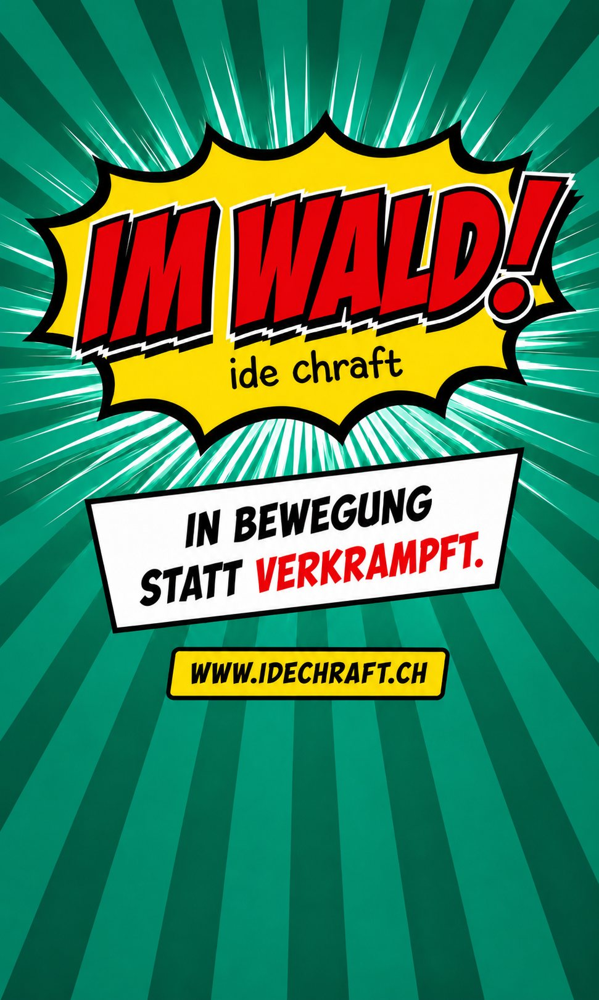
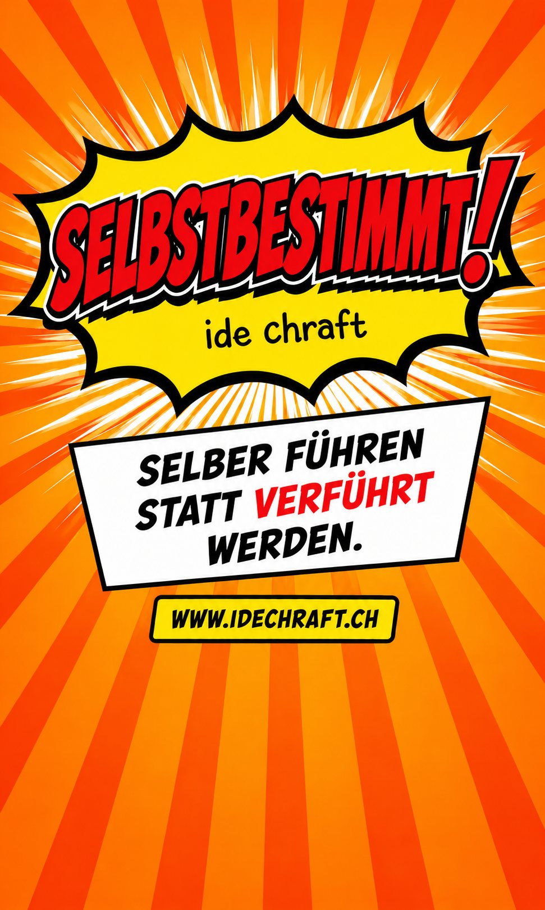
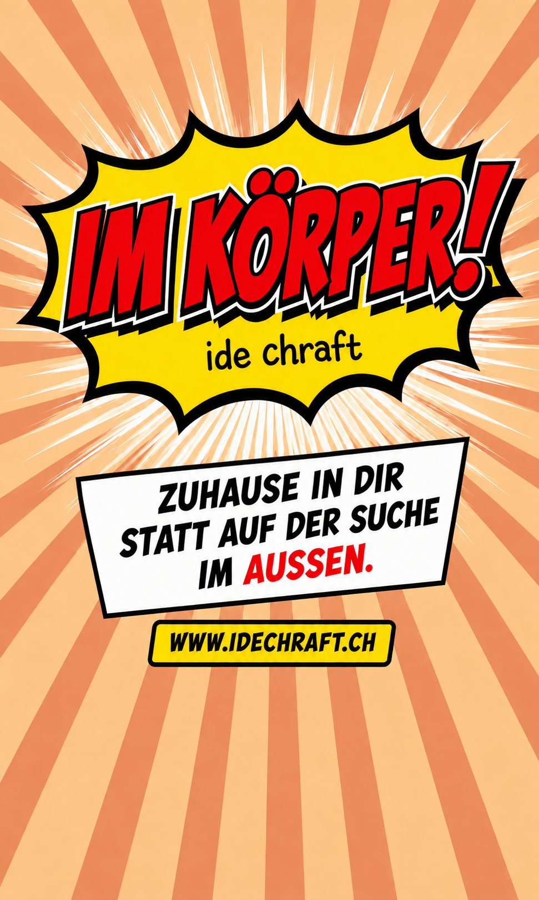
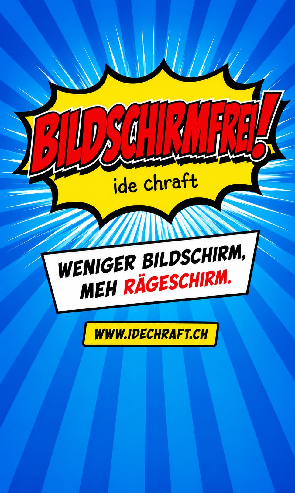
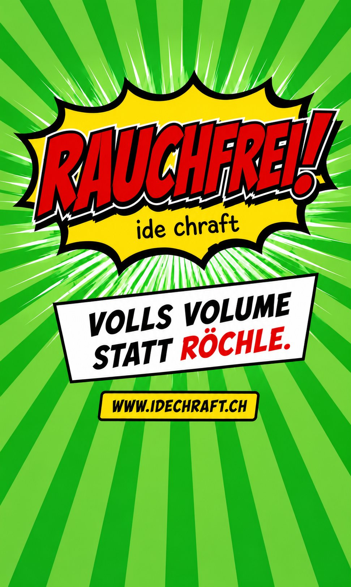
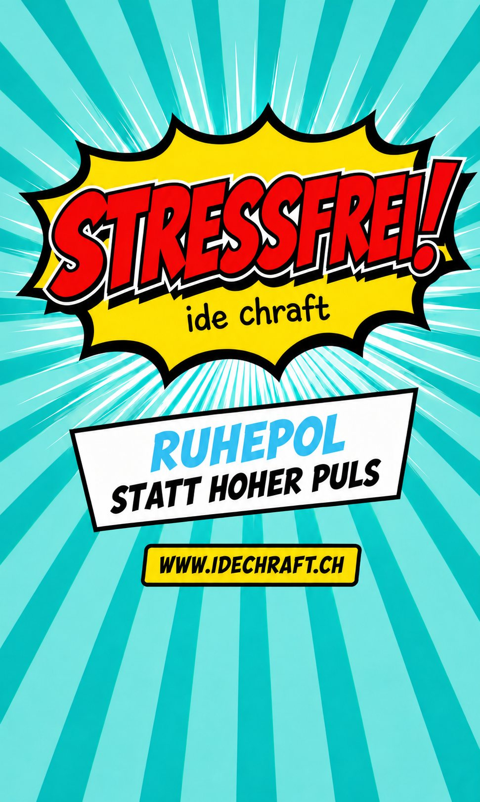

Klarheit gewinnen
Wer bin ich, was will ich – und was hindert mich daran? Manchmal hilft es, die Dinge einmal ausserhalb des eigenen Kopfes anzuschauen.
- Standortbestimmung
- Werte und Bedürfnisse klären
- Entscheidungen vorbereiten
Begleitung für Einzelpersonen
Wenn du dich im Kreis drehst, eine Entscheidung schwerfällt oder du merkst, dass du die Führung für dein Leben übernehmen willst, schauen wir gemeinsam hin.
Worum es geht
Manchmal spürt man: So wie bisher geht es nicht weiter. Vielleicht steckt man in einer Krise oder Umbruchsituation. Vielleicht ist es auch ein leiseres Gefühl, das dir einen Hinweis gibt, genauer hinschauen zu wollen.
Wir nehmen uns Zeit und Raum für dich und deine Situation. Was treibt dich an? Was bremst dich? Welche Muster wiederholen sich – und was davon möchtest du verändern?
Mich interessiert, wo du gerade feststeckst, was bereits funktioniert und was du verändern möchtest. Ich arbeite lösungsorientiert, ressourcenorientiert und systemisch – mit echtem Interesse an deinem Weg. Wir können spazierend im Wald in Winterthur, auf einer Bank, in einem Raum oder online arbeiten. Ich freue mich, dich auf deinem Weg ein Stückweit zu begleiten.
 Weg · Natur
Weg · NaturThemen
Jedes Coaching ist anders. Diese Themen begegnen mir besonders oft:
Wer bin ich, was will ich – und was hindert mich daran? Manchmal hilft es, die Dinge einmal ausserhalb des eigenen Kopfes anzuschauen.
Aufschieben, Selbstzweifel, immer dieselben Stolpersteine: Oft hat das, was wir Selbstsabotage nennen, einmal einen guten Grund gehabt. Spannend ist, ob es dir heute noch dient.
Trennung, Jobwechsel, Neuorientierung oder andere Umbrüche können vieles ins Wanken bringen. Dann hilft manchmal ein Gegenüber, mit dem man sortieren kann.
Das eigene Leben wieder aktiver gestalten: Entscheidungen treffen, die zu dir passen, und weniger nach dem leben, was von aussen erwartet wird.
Im Fokus
Wir nutzen die Bewegung des Körpers, um auch innere Prozesse in Bewegung zu bringen – und den Ausgleich, die Gelassenheit und die Kraft des Waldes. Unterwegs in der Natur begleite ich dich ein Stück auf deinem Weg.
Mir ist eine ungezwungene Atmosphäre wichtig, damit echte Begegnung möglich wird. Auch im Wald gründet das Coaching auf Professionalität: Begegnung auf Augenhöhe, Herzlichkeit und Humor stehen im Fokus. In Bewegung lässt es sich leichter mit den Dingen mitgehen – und das Nervensystem gleicht sich in der Natur gleich mit aus.
Probier's us, wenn's di gwunderet – und sonst stelle ich beim nächsten Mal einen Raum zur Verfügung.
«Dreissig Speichen umgeben eine Radnabe, doch der Wagen wird erst brauchbar durch das, was da nicht ist. Lehm wird mit Wasser gemischt, doch die Brauchbarkeit eines Gefässes hängt von seiner Leere ab. Fenster und Türen werden eingebaut, doch es ist die Leere, die einen Raum bewohnbar macht. Mache also das, was ist, vorteilhaft und das, was nicht ist, wirkungsvoll.»
Fokus-Begleitungen
«ide Chraft» lässt sich wörtlich einsetzen: Vier Wege mit einem klaren Fokus – jeder führt auf seine Weise zu mehr Klarheit.






Wischen oder Punkte antippen
Interessiert an einer Fokus-Begleitung? Melde dich für ein kostenloses Erstgespräch →
Meine Arbeitsweise
Ich gehe nicht davon aus, dass ich besser weiss, was für dich richtig ist. Mich interessiert, was bei dir bereits funktioniert, wo etwas feststeckt und was sich verändern darf. Manchmal braucht es eine neue Perspektive, manchmal eine konkrete Übung – und manchmal einfach einen Ort, an dem man die Dinge laut aussprechen kann. Mehr über meine Haltung und meinen Werdegang erfährst du auf der Seite Über mich.
Immer wieder erlebe ich, wie sich im Gespräch etwas löst: Die Atmung wird ruhiger, die Schultern sinken, der Blick verändert sich. Oft ist es nicht eine grosse Erkenntnis, sondern ein leises Klarerwerden – und der Moment, in dem jemand spürt: Ich kann selbst etwas bewegen.
Auch wenn dein Thema in kein Angebot passt, kannst du dich für eine Einzelsitzung melden. Den Schwerpunkt gibst du vor.
 Natur · Ruhe
Natur · RuheMögliche Themen einer Einzelsitzung